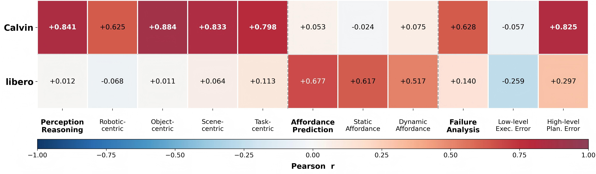

Demo case. A representative RoboBench item illustrates how a robot scene is converted into grounded questions and evaluated across embodied reasoning skills, including perception, planning, affordance prediction, and failure analysis.
| Model | Perception Reasoning | ||||||||
|---|---|---|---|---|---|---|---|---|---|
| Robotic-centric | Object-centric | Scene-centric | Task-centric | Avg | |||||
| Robot-type▼ | Robot-view▼ | Static Attr.▼ | Functional Attr.▼ | Spatial Relation▼ | Temp. Grounding▼ | Causality▼ | Refer. Comprehen.▼ | ||
| Basic Reference | |||||||||
| Human Evaluation | 80.67 | 79.08 | 43.77 | 83.89 | 70.91 | 51.61 | 91.22 | 93.22 | 74.30 |
| GPT-5.4-text-only | 25.86 | 28.26 | 8.81 | 45.57 | 32.67 | 22.90 | 34.48 | 18.40 | 27.12 |
| Closed-Source MLLMs | |||||||||
| GPT-5.4 | 73.28 | 50.00 | 42.86 | 73.42 | 54.46 | 38.93 | 45.52 | 71.17 | 56.20 |
| GPT-5.2 | 68.10 | 39.86 | 38.60 | 77.22 | 47.52 | 30.53 | 54.48 | 71.17 | 53.44 |
| GPT-5 | 64.66 | 47.10 | 49.24 | 69.62 | 54.46 | 48.09 | 74.48 | 78.53 | 60.77 |
| GPT-4.1 | 66.38 | 50.00 | 40.43 | 68.35 | 47.52 | 22.14 | 56.55 | 73.01 | 53.05 |
| GPT-4o | 75.00 | 39.13 | 18.24 | 60.76 | 49.50 | 22.14 | 43.45 | 55.21 | 45.43 |
| Claude-Opus-4.7 | 76.72 | 53.62 | 57.14 | 81.01 | 48.51 | 46.56 | 65.52 | 71.78 | 62.61 |
| Claude-Sonnet-4.6 | 53.45 | 47.83 | 53.80 | 69.62 | 52.48 | 29.01 | 57.24 | 69.33 | 54.09 |
| Claude-Sonnet-4.5 | 46.55 | 33.33 | 37.08 | 72.15 | 48.51 | 33.59 | 51.72 | 36.81 | 44.97 |
| Claude-Haiku-4.5 | 44.83 | 33.33 | 30.70 | 56.96 | 25.74 | 22.14 | 45.52 | 27.61 | 35.85 |
| Gemini-3.1-Pro | 71.55 | 49.28 | 66.26 | 78.48 | 61.90 | 31.93 | 88.97 | 90.18 | 67.32 |
| Gemini-2.5-Pro | 67.24 | 43.48 | 57.14 | 82.28 | 57.43 | 50.38 | 73.10 | 80.37 | 63.93 |
| Gemini-2.5-Flash | 66.38 | 34.78 | 57.75 | 74.68 | 55.45 | 34.92 | 75.17 | 76.69 | 59.48 |
| Open-Source Multi-Image MLLMs | |||||||||
| Qwen3-VL-8B | 52.59 | 36.96 | 27.66 | 65.82 | 36.63 | 25.95 | 31.72 | 54.60 | 41.49 |
| Qwen2.5-VL-7B-Ins | 37.07 | 23.19 | 24.32 | 56.96 | 26.73 | 22.14 | 33.10 | 34.36 | 32.23 |
| LLaVA-OneVision-7B | 31.03 | 26.81 | 39.21 | 68.35 | 42.57 | 18.32 | 33.79 | 50.92 | 38.88 |
| Embodied MLLMs | |||||||||
| RoboBrain-2.0-7B | 31.90 | 19.57 | 28.57 | 44.30 | 34.65 | 21.37 | 24.83 | 33.13 | 29.79 |
| RoboBrain-2.5-4B | 35.34 | 24.64 | 39.82 | 77.22 | 53.47 | 18.32 | 59.31 | 44.17 | 44.04 |
| MiMo-Embodied-7B | 25.86 | 21.74 | 32.22 | 65.82 | 49.50 | 24.43 | 57.93 | 43.56 | 40.13 |
| Model | Instruction Comprehension | Generalized Planning (Q1) | ||||||||||||
|---|---|---|---|---|---|---|---|---|---|---|---|---|---|---|
| Explicit▼ | Implicit▼ | Avg▼ | Cross-Embodiment Planning | Cross-Object Planning | Cross-View Planning | Cross-Task Planning | Avg | |||||||
| Single-arm▼ | Dual-arm▼ | Mobile-manip.▼ | Human▼ | Material Afford.▼ | Physical Attr.▼ | World Knowl.▼ | Multi▼ | Single▼ | Navigation Plan.▼ | |||||
| Basic Reference | ||||||||||||||
| Human Evaluation | 59.94 | 61.13 | 60.54 | 72.50 | 41.93 | 41.55 | 62.28 | 56.70 | 58.98 | 49.36 | 52.82 | 51.59 | 45.23 | 54.50 |
| GPT-5.4-text-only | 74.88 | 38.54 | 56.71 | 83.53 | 66.47 | 74.71 | 62.65 | 76.03 | 80.36 | 66.95 | 71.33 | 72.41 | 47.66 | 73.74 |
| Closed-Source MLLMs | ||||||||||||||
| GPT-5.4 | 74.58 | 50.80 | 62.69 | 85.56 | 70.28 | 75.59 | 56.26 | 78.64 | 64.83 | 72.44 | 73.33 | 72.50 | 53.92 | 70.91 |
| GPT-5.2 | 75.90 | 48.85 | 62.38 | 86.92 | 70.00 | 80.38 | 60.08 | 81.60 | 64.62 | 75.49 | 75.84 | 71.22 | 55.03 | 72.31 |
| GPT-5 | 77.63 | 54.71 | 66.17 | 84.25 | 69.48 | 81.27 | 70.13 | 81.58 | 59.80 | 71.95 | 70.95 | 72.76 | 58.29 | 71.84 |
| GPT-4.1 | 76.23 | 57.30 | 66.77 | 88.08 | 68.56 | 78.17 | 55.38 | 81.37 | 65.76 | 64.88 | 73.70 | 71.83 | 52.94 | 71.79 |
| GPT-4o | 74.22 | 54.90 | 64.56 | 86.02 | 66.40 | 76.44 | 62.31 | 80.86 | 72.63 | 73.78 | 64.50 | 65.63 | 57.62 | 73.46 |
| Claude-Opus-4.7 | 73.92 | 61.52 | 67.72 | 89.43 | 71.98 | 84.30 | 68.53 | 84.56 | 67.70 | 70.00 | 75.06 | 72.06 | 59.53 | 75.54 |
| Claude-Sonnet-4.6 | 79.94 | 61.38 | 70.66 | 88.89 | 73.93 | 84.42 | 66.19 | 84.76 | 79.10 | 73.54 | 80.55 | 77.90 | 67.06 | 79.38 |
| Claude-Sonnet-4.5 | 76.65 | 53.62 | 65.13 | 89.11 | 75.06 | 81.70 | 64.27 | 85.10 | 69.70 | 76.22 | 82.17 | 75.06 | 59.52 | 76.62 |
| Claude-Haiku-4.5 | 73.78 | 42.88 | 58.33 | 86.13 | 74.07 | 76.63 | 60.38 | 81.37 | 58.93 | 71.75 | 78.48 | 71.73 | 50.87 | 71.01 |
| Gemini-3.1-Pro | 73.25 | 59.90 | 66.58 | 80.64 | 69.85 | 79.90 | 50.13 | 73.11 | 71.66 | 69.63 | 74.64 | 74.39 | 57.14 | 70.71 |
| Gemini-2.5-Pro | 76.20 | 60.96 | 68.58 | 83.53 | 69.08 | 84.31 | 59.16 | 76.72 | 66.93 | 77.68 | 73.57 | 75.24 | 55.34 | 71.50 |
| Gemini-2.5-Flash | 71.45 | 49.90 | 60.67 | 83.58 | 69.41 | 81.06 | 58.43 | 75.72 | 70.76 | 74.88 | 72.14 | 72.65 | 55.08 | 70.98 |
| Open-Source Multi-Image MLLMs | ||||||||||||||
| Qwen3-VL-8B | 59.46 | 30.80 | 45.13 | 74.49 | 44.54 | 57.98 | 52.25 | 63.88 | 54.66 | 55.49 | 49.15 | 58.75 | 37.22 | 56.71 |
| Qwen2.5-VL-7B-Ins | 56.04 | 23.90 | 39.97 | 73.89 | 30.19 | 56.06 | 53.85 | 58.90 | 57.78 | 53.90 | 25.83 | 37.50 | 11.95 | 49.92 |
| LLaVA-OneVision-7B | 38.25 | 10.61 | 24.43 | 54.87 | 31.05 | 35.88 | 43.99 | 37.59 | 51.37 | 30.00 | 31.43 | 36.60 | 25.11 | 41.02 |
| Embodied MLLMs | ||||||||||||||
| RoboBrain-2.0-7B | 43.54 | 21.10 | 32.32 | 62.49 | 30.16 | 44.42 | 42.90 | 46.62 | 52.87 | 45.24 | 31.25 | 32.69 | 25.98 | 45.12 |
| RoboBrain-2.5-4B | 36.30 | 16.65 | 26.47 | 39.32 | 23.99 | 45.87 | 54.53 | 31.69 | 29.16 | 24.39 | 28.39 | 25.75 | 23.97 | 31.85 |
| MiMo-Embodied-7B | 66.87 | 37.30 | 52.09 | 82.20 | 37.11 | 61.76 | 63.03 | 73.05 | 66.85 | 70.88 | 58.95 | 43.88 | 28.71 | 62.72 |
| Model | Instr. Compre. | Generalized Planning | ||||||
|---|---|---|---|---|---|---|---|---|
| Explicit Goal | Single Arm | Material Afford. | World Knowl. | |||||
| Q2▼ | Q3▼ | Q2▼ | Q3▼ | Q2▼ | Q3▼ | Q2▼ | Q3▼ | |
| Basic Reference | ||||||||
| Human Evaluation | 45.28 | 74.32 | 27.52 | 71.35 | 43.62 | 71.20 | 43.89 | 69.83 |
| GPT-5.4-text-only | 36.98 | 46.25 | 40.98 | 52.86 | 40.43 | 52.33 | 43.01 | 41.46 |
| Closed-Source MLLMs | ||||||||
| GPT-5.4 | 49.48 | 62.50 | 48.20 | 67.85 | 44.38 | 64.67 | 42.19 | 51.22 |
| GPT-5.2 | 39.32 | 75.00 | 42.86 | 73.02 | 41.07 | 66.67 | 37.50 | 56.10 |
| GPT-5 | 44.09 | 72.97 | 47.26 | 75.75 | 44.38 | 62.83 | 39.58 | 63.41 |
| GPT-4.1 | 45.31 | 70.00 | 48.62 | 63.76 | 44.32 | 63.67 | 39.58 | 58.54 |
| GPT-4o | 42.86 | 65.00 | 43.94 | 59.95 | 41.23 | 55.33 | 42.19 | 51.22 |
| Claude-Opus-4.7 | 44.53 | 67.50 | 51.08 | 65.12 | 45.97 | 63.00 | 45.31 | 63.41 |
| Claude-Sonnet-4.6 | 43.75 | 70.00 | 43.22 | 66.21 | 43.90 | 64.33 | 39.58 | 60.98 |
| Claude-Sonnet-4.5 | 41.67 | 61.25 | 44.73 | 56.68 | 41.99 | 54.00 | 41.15 | 48.78 |
| Claude-Haiku-4.5 | 34.13 | 62.50 | 43.07 | 60.38 | 38.14 | 63.18 | 31.77 | 70.73 |
| Gemini-3.1-Pro | 44.79 | 71.25 | 50.65 | 64.58 | 46.97 | 67.67 | 26.56 | 65.85 |
| Gemini-2.5-Pro | 37.76 | 72.50 | 52.02 | 71.66 | 49.20 | 70.00 | 35.42 | 68.29 |
| Gemini-2.5-Flash | 47.66 | 77.50 | 49.85 | 54.22 | 44.81 | 68.83 | 45.31 | 68.29 |
| Open-Source Multi-Image MLLMs | ||||||||
| Qwen3-VL-8B | 49.74 | 62.50 | 50.94 | 61.58 | 44.80 | 55.50 | 36.98 | 56.10 |
| Qwen2.5-VL-7B-Ins | 29.43 | 55.00 | 31.88 | 52.59 | 30.17 | 49.33 | 20.31 | 51.22 |
| LLaVA-OneVision-7B | 33.59 | 41.25 | 35.06 | 46.05 | 35.97 | 40.50 | 34.90 | 43.90 |
| Embodied MLLMs | ||||||||
| RoboBrain-2.0-7B | 34.90 | 52.50 | 33.84 | 53.95 | 34.29 | 49.00 | 27.60 | 48.78 |
| RoboBrain-2.5-4B | 32.81 | 58.75 | 37.37 | 54.50 | 35.25 | 55.17 | 32.29 | 56.10 |
| MiMo-Embodied-7B | 38.17 | 55.00 | 43.87 | 55.31 | 42.90 | 51.50 | 46.88 | 63.41 |
| Model | Affordance Prediction | Failure Analysis | |||||
|---|---|---|---|---|---|---|---|
| Static▼ | Dynamic▼ | Naviga.▼ | Avg▼ | Execution▼ | Planning▼ | Avg▼ | |
| Basic Reference | |||||||
| Human Evaluation | 86.08 | 80.02 | 81.85 | 82.63 | 47.30 | 80.67 | 63.99 |
| GPT-5.4-text-only | 23.81 | 27.52 | 25.51 | 25.61 | 11.92 | 32.64 | 22.28 |
| Closed-Source MLLMs | |||||||
| GPT-5.4 | 44.22 | 36.91 | 58.16 | 46.43 | 26.49 | 65.97 | 46.23 |
| GPT-5.2 | 43.54 | 39.60 | 47.96 | 43.70 | 26.49 | 68.06 | 47.27 |
| GPT-5 | 62.59 | 49.66 | 62.24 | 58.16 | 19.87 | 80.56 | 50.21 |
| GPT-4.1 | 29.93 | 42.95 | 68.37 | 47.08 | 20.53 | 70.83 | 45.68 |
| GPT-4o | 40.82 | 42.28 | 50.00 | 44.37 | 31.79 | 57.64 | 44.71 |
| Claude-Opus-4.7 | 53.74 | 62.42 | 79.59 | 65.25 | 14.57 | 72.22 | 43.40 |
| Claude-Sonnet-4.6 | 37.41 | 52.35 | 41.84 | 43.87 | 17.88 | 77.78 | 47.83 |
| Claude-Sonnet-4.5 | 34.69 | 38.93 | 53.06 | 42.23 | 14.57 | 63.19 | 38.88 |
| Claude-Haiku-4.5 | 27.89 | 26.17 | 21.43 | 25.16 | 17.22 | 45.83 | 31.53 |
| Gemini-3.1-Pro | 82.31 | 77.85 | 96.94 | 85.70 | 25.17 | 80.74 | 52.95 |
| Gemini-2.5-Pro | 65.99 | 61.07 | 93.88 | 73.65 | 18.54 | 72.22 | 45.38 |
| Gemini-2.5-Flash | 61.22 | 69.80 | 36.73 | 55.92 | 25.83 | 65.49 | 45.66 |
| Open-Source Multi-Image MLLMs | |||||||
| Qwen3-VL-8B | 23.81 | 17.45 | 22.45 | 21.24 | 22.52 | 55.56 | 39.04 |
| Qwen2.5-VL-7B-Ins | 18.37 | 31.54 | 26.53 | 25.48 | 13.91 | 35.42 | 24.66 |
| LLaVA-OneVision-7B | 38.78 | 33.56 | 66.33 | 46.22 | 20.53 | 31.25 | 25.89 |
| Embodied MLLMs | |||||||
| RoboBrain-2.0-7B | 31.97 | 27.52 | 31.63 | 30.37 | 15.23 | 40.28 | 27.75 |
| RoboBrain-2.5-4B | 50.34 | 21.48 | 72.45 | 48.09 | 43.71 | 46.53 | 45.12 |
| MiMo-Embodied-7B | 51.70 | 36.91 | 70.41 | 53.01 | 19.21 | 42.36 | 30.78 |
Gemini-3.1-Pro shows the most consistent advantages across perception, affordance, and failure dimensions—67.32 in perception reasoning (vs. the next-best 63.93 of Gemini-2.5-Pro), 85.70 in affordance prediction, and 52.95 in failure analysis—leaving only a modest residual gap to the human reference (74.30 in perception), while most other MLLMs remain highly uneven or generally weak.
Closed-source MLLMs lead open-source ones in every dimension, by about 20 points on average (~50% relative)—widest in instruction comprehension (~28) and generalized planning (~25), narrowest in failure analysis (~13). Within the same family, performance improves consistently with model size and generation.
Planning failures are dominated by a perception-action gap: 45% are execution errors from missing or incorrect action sequences, while 24% are identification errors, 25% commonsense or physical-constraint errors, and 6% mode-specific format errors. Current MLLMs often reason plausibly but still fail to produce executable embodied actions.
A text-only baseline (GPT-5.4 without images) stays close to random on perception (27.12) and affordance (25.61) tasks, far below the best vision-conditioned MLLM (67.32 / 85.70). RoboBench questions demand grounding in the observed scene—visual state, embodiment, and physical feasibility.
Even the strongest explicit-goal model (Claude-Sonnet-4.6) drops from 79.94 to 61.38 when instructions become implicit, and the gap widens for weaker MLLMs. A paired chain-of-thought rewriting ablation shows this is a genuine intent-grounding limitation, not a prompting artifact.
Models handle object attributes well (up to 82.28 on functional attributes) but struggle with robotic perception and spatiotemporal reasoning: the best scores are only 53.62 on robot-view understanding and 50.38 on temporal grounding—the two weakest perception tasks. Stronger embodiment-aware perception and explicit spatiotemporal reasoning are needed.
Cross-embodiment: models trained mostly on single-arm settings fail to coordinate dual-arm actions or mobile manipulation. Cross-object: performance drops sharply on uncommon objects, symbolic reasoning, and world knowledge. Cross-view: multi-view inputs effectively recover performance when the front view is occluded, underscoring the value of multi-view reasoning.
Diagnosing execution-level errors is far harder than planning-level ones: the best model reaches only 43.71 (most fall between 15 and 27), while planning-error diagnosis reaches 80.74; the human reference shows the same asymmetry (47.30 vs. 80.67). It requires fine-grained spatial and physical understanding, e.g., separating position errors from rotation errors.

To test whether RoboBench captures abilities that matter for robot control, we convert several open-source VLM backbones into VLA policies with minimal fine-tuning and evaluate them on CALVIN and LIBERO-10.
RoboBench perception scores strongly align with long-horizon CALVIN performance: object-centric perception reaches r=0.884 and scene-centric perception reaches r=0.833. For LIBERO-10, the strongest signal shifts toward fine-grained interaction dynamics, where static+dynamic affordance prediction reaches r=0.677.
These correlations indicate that different VLA benchmarks depend on different cognitive skills. RoboBench therefore serves not only as a leaderboard, but also as a diagnostic tool for identifying which VLM capabilities are likely to transfer into downstream embodied policies.


Planning Evaluation Framework. Evaluation of the planning dimension (Q1–Q3). Each task is decomposed into a sequence of parameterized atomic actions forming a Directed Acyclic Graph (DAG) that encodes causal and temporal dependencies. For Q1 (Long-horizon planning), an MLLM-based world simulator assesses both NodeCorrectness (action alignment) and TaskCompletion (goal-state achievement) by simulating action rollouts under visual and physical constraints. Q2 (Next-step planning) evaluates fine-grained step prediction by comparing skill, object, and parameter accuracy, while Q3 (Task state estimation) measures binary correctness on whether a subtask has been completed. Together, the pipeline provides a unified, interpretable framework for assessing structural correctness and embodied feasibility in planning.
@misc{luo2025robobenchcomprehensiveevaluationbenchmark,
title={RoboBench: A Comprehensive Evaluation Benchmark for Multimodal Large Language Models as Embodied Brain},
author={Yulin Luo and Chun-Kai Fan and Menghang Dong and Jiayu Shi and Xiangju Mi and Mengdi Zhao and Bo-Wen Zhang and Cheng Chi and Jiaming Liu and Gaole Dai and Rongyu Zhang and Ruichuan An and Kun Wu and Zhengping Che and Shaoxuan Xie and Guocai Yao and Zhongxia Zhao and Pengwei Wang and Guang Liu and Zhongyuan Wang and Tiejun Huang and Shanghang Zhang},
year={2025},
eprint={2510.17801},
archivePrefix={arXiv},
primaryClass={cs.RO},
url={https://arxiv.org/abs/2510.17801},
note={Accepted to ECCV 2026},
} RoboBench: A Comprehensive Evaluation Benchmark for Multimodal Large Language Models as Embodied Brain
RoboBench: A Comprehensive Evaluation Benchmark for Multimodal Large Language Models as Embodied Brain